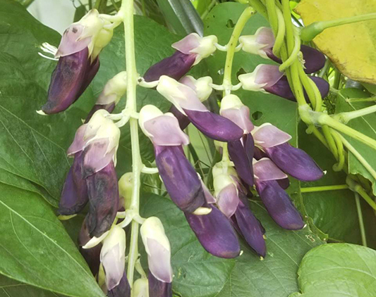

5月上旬
双葉が顔を出しました
ところどころで双葉が顔を出し始め、元気にあいさつする芽も見えてきました。1か所に3粒蒔き、発芽の様子を丁寧に見守っています。
Farm
元サイトの圃場ページに合わせて、南国市内の畑で進む栽培の様子を時系列でまとめています。
5月上旬
ところどころで双葉が顔を出し始め、元気にあいさつする芽も見えてきました。1か所に3粒蒔き、発芽の様子を丁寧に見守っています。

夏の圃場
圃場では花が立派に咲き、夕日が映える畑の中で八升豆の葉が勢いよく広がります。成長エネルギーの強さが見て取れる時期です。

収穫前
たわわに実る前の莢の姿からも、圃場全体の力強さが伝わります。年末の収穫へ向けて、支柱や草刈りなどの管理も並行して進めています。
圃場づくり
支柱用の竹を伐採し、木製支柱を500本以上立てるなど、栽培前の準備にも多くの手作業を費やしています。自然のものを活かしながら、圃場全体を整えています。
環境づくり
草刈り機を使いながら、草殺しなどの除草剤をまかず、口に入れるものとして安心を届ける圃場管理を徹底しています。